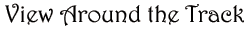
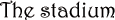
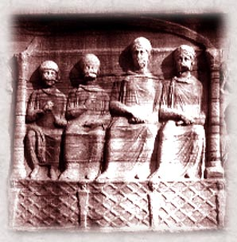

|
  When you enter the Hippodrome, you will be stunned by its size and grandeur. The marble grandstands can seat more than 40,000 men. The race track, which was designed for quadriga races, is 1,575 feet long—twice as long as the usual hippodrome track. Each side of the track is an amazing 200 feet wide. As you look at the northern end, you will see 12 starting gates, each wide enough to admit a quadriga. Atop the gates stand four huge bronze horses symbolizing the strength and majesty of the competitors. Along the first stretch, you will see the spina, a short raised area separating the two stretches of the race course. The rich collection of art displayed here captures the grandeur of our Roman heritage. One of the most famous of these works is a 1,500-year-old column entwined with bronze serpents that commemorates the Greek victory over the Persians in 479 B.C. Another is the Egyptian obelisk that Emperor Theodosius I set on a marble base in about 390 A.D. |
|
 Direct your gaze along the east side of the stadium to see the emperor’s elevated box, from which he presides over races and other events. The emperor enters his box directly from the Imperial Palace, just outside the Hippodrome. You can’t miss his entrance. Just listen to the roar from 40,000 throats—almost as loud as the roar that cheers on the quadrigas as they approach the finish line! |